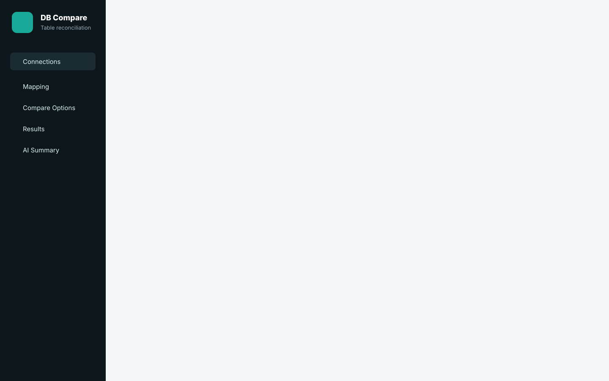

Back to portfolio
Oracleenterprise database support
MySQLcross-database comparison
Batchlarge table strategies
AIlocal mismatch summaries
Database reconciliation
DB Table Compare Pro
A Streamlit application for validating source and target database tables across Oracle and MySQL, with mapping, batching, per-column rules, exports, and AI-assisted mismatch analysis.

Problem
Data reconciliation gets messy when schemas and systems differ.
QA and data teams often need to prove that migrations, integrations, ETL jobs, or system replacements produce equivalent data. Manual comparison in spreadsheets does not scale, especially when tables have different column names, business rules, filters, and row volumes.
What the tool solves
- Compares source and target rows using single or composite keys.
- Maps columns across different table schemas.
- Supports tolerance, trimming, case-insensitive comparison, and derived columns.
- Processes larger datasets through batching strategies.
- Summarizes mismatch patterns with local LLM assistance.
Case-study snapshot
What this project demonstrates to a hiring team.
DB Table Compare Pro shows practical QA engineering for data-heavy systems: adapter design, reconciliation rules, scale-aware batching, and reviewer-friendly outputs.
Data QA understanding
Models the real problems in migration and integration testing: mismatched schemas, composite keys, null handling, numeric tolerances, missing rows, and derived values.
Architecture discipline
Separates database access, comparison logic, batching, validation, mapping, export, and AI analysis so new engines or comparison rules can be added later.
Operational usefulness
Creates outputs that testers and analysts can actually review: filtered mismatch tables, summary counts, Excel/CSV exports, and AI-generated discrepancy explanations.
Safe portfolio positioning
Uses sanitized visuals and capability descriptions without publishing connection strings, credentials, production schemas, query history, or customer records.
Feature depth
A focused reconciliation workbench.
Connection workflow
Users connect source and target systems, select database type, authenticate, and choose tables through a Streamlit UI designed for tester and analyst workflows.
Flexible comparison setup
Supports key selection, compare-column selection, custom mappings, filters, derived columns, row hashes, and per-column comparison behavior.
Batch processing
Designed for practical data sizes with numeric range batching, ordered seek batching, and row-based estimation to avoid one giant comparison pass.
Interactive result review
Results can be reviewed through sortable/filterable tables, mismatch summaries, per-field diffs, CSV output, and Excel reports.
AI-assisted analysis
Local Ollama integration helps summarize discrepancies, explain mismatch causes, and support natural-language-to-SQL filter creation.
Self-test coverage
The project includes tests for comparison behavior, duplicate detection, auto-mapping, numeric tolerance, row hashing, SQL validation, and SQLite integration flows.
Product view
Sanitized demo screens.
These visuals show the intended workflow and interface shape without exposing database names, credentials, or real records.
Comparison dashboard
Source/target connection state, comparison setup, mismatch table, and AI summary in one reviewer-friendly flow.

Reconciliation logic
A visual explanation of how source rows, target rows, mismatch highlighting, and summary generation fit together.
Architecture
Streamlit front end with comparison modules behind it.
The application separates UI concerns from database adapters, comparison logic, mapping, profiling, validation, and AI assistance. That makes the tool easier to extend with more database types or rules later.
Streamlit UI
Connection setup, mapping, options, and results.
Connection setup, mapping, options, and results.
->
DB adapters
Oracle and MySQL connection handling.
Oracle and MySQL connection handling.
Comparison engine
Keys, mappings, rules, batches, and row hashes.
Keys, mappings, rules, batches, and row hashes.
->
Results layer
Mismatches, missing rows, exports, summaries.
Mismatches, missing rows, exports, summaries.
Local LLM
Optional privacy-preserving analysis.
Optional privacy-preserving analysis.
->
Tester insight
Root-cause hints and NL-to-SQL filters.
Root-cause hints and NL-to-SQL filters.
Setup and use
- Create a Python virtual environment and install requirements.
- Configure Oracle/MySQL client requirements and optional Ollama settings.
- Run the Streamlit app locally.
- Connect source and target databases.
- Select tables, keys, compare columns, mappings, filters, and rules.
- Run comparison, review mismatches, export results, and optionally generate AI summaries.
Tech stack
Public portfolio note: the page describes capability and architecture only. It does not include database credentials, `.env` files, schemas, or customer data.